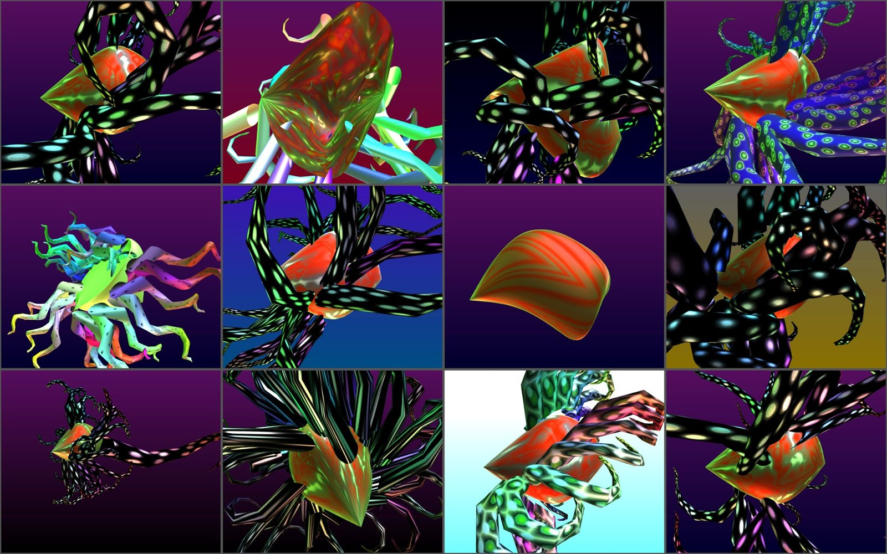
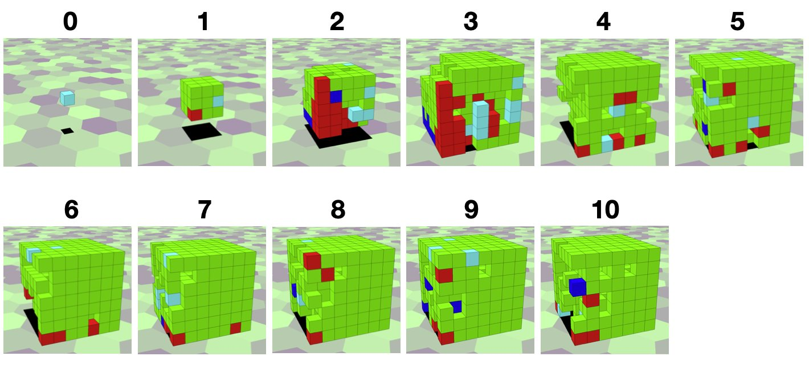
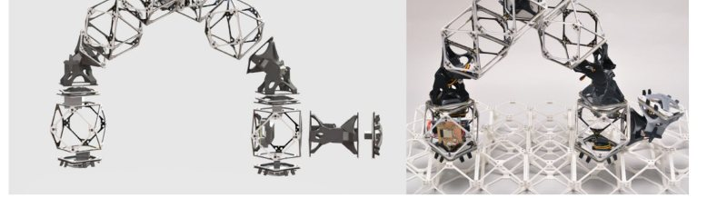
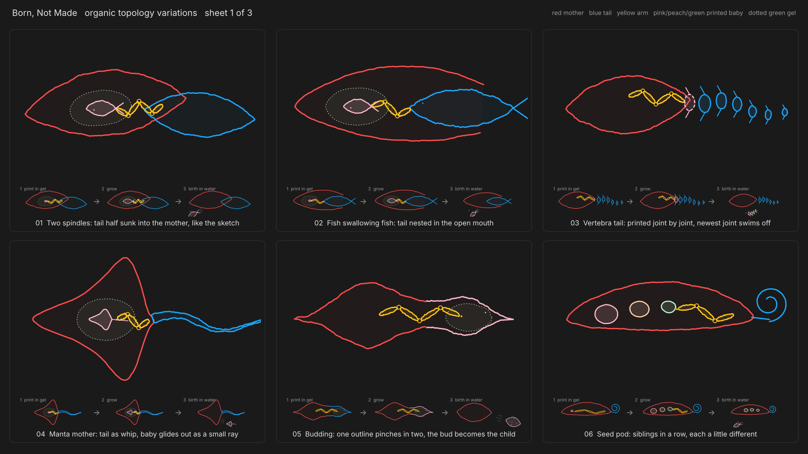

MAS thesis · MIT Media Lab · 2026
Born,
Not Made
A mother robot prints a baby robot inside the mother's own body, in gel, and gives birth in water.
Ruipeng Wang, second year MAS student, MIT Media Lab.
Thesis committee: Behnaz Farahi, Cynthia Breazeal, Kent Larson, Neil Gershenfeld.
Film. The tail docks, the arm prints, the baby is born.
This is an ongoing social experiment about a new kind of artificial species. The work has a trunk, the argument below, but it is an open question, so the site grows branches, keeps a log, and invites you in. The discussion is the work, as in Olafur Eliasson and Minik Rosing's Ice Watch, where Greenland ice melting in a public square became the conversation it started.
Leave a voiceSoft robotics meets artificial life
The main branch of this work sits where two fields meet. Artificial life has asked how a machine can make another machine. Soft robotics has given machines bodies that can be printed, filled and inflated. Here the second is placed under the umbrella of the first: soft robotics in the service of reproduction.
Since von Neumann, artificial life has studied reproduction as copying, mostly on screens. Robots have bodies, but they are assembled outside any parent. Bringing the two together turns an old question around: from how machines relate to us, to what happens between them, beginning with a mother and a child.
The title borrows a phrase from the Nicene Creed, "begotten, not made", and an echo of Blade Runner 2049, where a replicant born from another body is the event that breaks the order of things.
Like us inside, not outside
A humanoid copies the human form. This mother copies a human process.
A humanoid robot imitates the human from outside: face, hands, gait. Inside, it runs on a logic nothing like ours. The mother robot looks like nothing human. What the mother imitates is inside: a body formed within another body, held in fluid, fed through a cord, released by labour. The likeness is in the process, not the shape.
From copy to relation
In one body: kinship
A copy is the same as its maker. A child is part of the mother, and then separate. The baby forms whole inside the mother's body and leaves through birth.
In a species: relation and inheritance
One body gives birth; many shape the child. Mother agents pass part of their memory to baby agents. Across generations the population keeps what works and drifts from what was designed.
Kingma asks whether a fetus is a part of its mother (Mind, 2019). Hrdy argues that human young are raised by many, not by one (Mothers and Others, 2009). The work takes both as design rules.
Where this work stands
Other robots already make robots. None of them makes the baby inside a parent, and none gives birth.
Before them, cybernetics (Wiener, 1948) built machines that steer themselves, like Grey Walter’s robot tortoises (1948 to 1949), and machines that relate: in Gordon Pask’s Colloquy of Mobiles (Cybernetic Serendipity, London, 1968) “male” and “female” mobiles courted each other with light. Cyberfeminism later took its name from that word.

1948 · von Neumann
A machine gathers floating parts and builds another machine like itself.

1970 · Conway
Simple rules on a grid; a glider gun, found by Bill Gosper the same year, keeps producing gliders.

1997 · Sims, Galápagos
Viewers choose which virtual organisms survive, mate and mutate, on screens.

2015 · Iida, Cambridge
A mother robot arm glues cube children together, outside any body.

2017 · Eiben, Robot Baby
Two robots mate; the child is printed and assembled by hand, outside the parents.

2021 · Horibe, Walker, Risi
Soft robots grow cell by cell and regrow damaged parts, in simulation.

2022 · MIT CBA
Voxel robots build more robots from parts fed in.

2026 · This work
A robot mother prints the baby inside the body, in gel, then gives birth in water.
Why it prints
From zero, inside
A body is not delivered finished. It forms from almost nothing, slowly, inside another body. So the mother does not push out a ready made baby, as the first prototype did. The mother robot prints the baby from zero, inside the mother's own body.
In liquid
Amniotic fluid lets the fetus grow unimpeded and cushions it while it forms. In embedded printing a gel bath does the same for a soft print: it holds the body up while it takes shape.
The gel is the robotic womb's amniotic fluid. The baby forms held in it, and is born out of it.
First print in gel, October 2026.
Three prototypes, toward a womb that prints

First
A rigid shell. A water muscle and a pump push a ready made baby out.

Second
A soft, clear body. Mother and baby each carry a chip, a battery and a water pump.

Third
An arm with a syringe goes inside the mother. The baby is made inside, not put in.
How each version worked, and what it taught: Prototypes, the first prototype page and the artist's page on the second.

Print and assemble in one cycle: print the soft body, place the made parts, print over them.
One birth, step by step
The DexArm version, rendered from the Blender model.
The body changes too

The upper skin is printed silicone origami. The womb is closed and full of gel, so when the baby inflates, the baby's volume has to go somewhere: the pleats open and the belly rises. Pressure pulses then push the baby down the canal. After birth the womb vents, the pleats fold back and the skin sags a little under gravity. The swelling is not decoration. It is how a closed body makes room, pushes, and lets go.
Full mechanism, parts and sources: Build.
Not a copy
Babies of different forms and colours stay near the mother. One takes the arm and becomes the next mother.
A copy repeats its maker. Each birth here is generated from the mother's memory, the signals the mother receives, and chance, so every baby differs. What links them is relation: shared memory, likeness of body and time spent near each other. The Society tab runs this at the scale of a population.

Can a machine be kin? What should a robot mother pass on, and what never? Tell us, in words or in a sketch. Every voice stays on the record, in the open.
Go to VoicesShown at
- ALIFE 2026, Waterloo, August 2026. Art gallery and the Artificial Life in the Wild / Agent Ethology workshop.
- VISAP 2026, IEEE VIS Arts Program: the exhibition Amplification, MIT Met Warehouse, Cambridge, 11 to 13 November 2026.
- NeurIPS 2026, Creative AI, Sydney, December 2026, with a travel award.
- Hard Mode, the MIT Media Lab's hardware and AI hackathon, March 2026. The jury created a Special Visionary Prize for this project.
References
- von Neumann, J. Theory of Self-Reproducing Automata, ed. A. W. Burks. University of Illinois Press, 1966.
- Gardner, M. "Mathematical Games." Scientific American 223(4), 120 to 123, 1970. doi
- Sims, K. Galápagos, 1997. karlsims.com
- Zykov, V. et al. "Self-reproducing machines." Nature 435, 163 to 164, 2005. doi
- Brodbeck, L., Hauser, S., Iida, F. "Morphological evolution of physical robots through model-free phenotype development." PLOS ONE 10(6), e0128444, 2015. doi
- Jelisavcic, M. et al. "Real-World Evolution of Robot Morphologies: A Proof of Concept." Artificial Life 23(2), 206 to 235, 2017. doi
- Horibe, K., Walker, K., Risi, S. "Regenerating Soft Robots through Neural Cellular Automata." Genetic Programming, EuroGP 2021, LNCS 12691, 36 to 50, 2021. doi arXiv
- Abdel-Rahman, A. et al. "Self-replicating hierarchical modular robotic swarms." Communications Engineering 1, 35, 2022. doi
- Kingma, E. "Were You a Part of Your Mother?" Mind 128(511), 609 to 646, 2019. doi
- Hrdy, S. B. Mothers and Others: The Evolutionary Origins of Mutual Understanding. Belknap Press, 2009.
- Fitzsimmons, E. D., Bajaj, T. "Embryology, Amniotic Fluid." StatPearls, 2023. NCBI
- Hajash, K. et al. "Large-Scale Rapid Liquid Printing." 3D Printing and Additive Manufacturing 4(3), 123 to 132, 2017. doi
- Hinton, T. J. et al. "3D Printing PDMS Elastomer in a Hydrophilic Support Bath via Freeform Reversible Embedding." ACS Biomaterials Science & Engineering 2(10), 1781 to 1786, 2016. doi
- O'Bryan, C. S. et al. "Self-assembled micro-organogels for 3D printing silicone structures." Science Advances 3(5), e1602800, 2017. doi
Ideas
Questions the work raises
Readings the work invites: what a womb is, whether a robot can be a mother, and what a mother is at all.
Matrix and cyberfeminism
Latin matrix comes from mater, mother. It meant a breeding animal, then the womb, then a mould that gives form, and in 1850 Sylvester used it for an array of numbers. The womb became the mould, and the mould became the simulation.
Cyberfeminism took the word back. VNS Matrix wrote their Cyberfeminist Manifesto in 1991. Sadie Plant's Zeros + Ones (1997) tied weaving, women and computing. Irina Aristarkhova's Hospitality of the Matrix (2012) reads the matrix as a space that makes room for another: hospitality, not containment. The robotic womb here is built as that kind of space: a body that makes room, holds, and lets go.
Matricentric feminism
Andrea O'Reilly argues that mothers need a feminism of their own, centred on the work and experience of mothering (Matricentric Feminism, 2016). The work does not stage motherhood as a role played by a machine. It asks which parts of gestation are mechanical, and which parts only exist between two bodies.
Full surrogacy and the Mosuo
Sophie Lewis (Full Surrogacy Now, 2019) treats gestation as work and asks for a world where everyone shares it. The Mosuo (Na) of southwest China live in matrilineal households where children grow up with their mother's kin, a society Cai Hua described as "without fathers or husbands" (2001). Both loosen the tie between one parent and one child. In the society simulation a baby is born of one body and shaped by many relations.
Artificial womb, robotic womb
J. B. S. Haldane imagined ectogenesis in Daedalus (1924). In 2017 Partridge and colleagues kept premature lambs alive for four weeks in a fluid filled bag, the Biobag. An artificial womb replaces a mother for a human child. A robotic womb is a mother for a machine.
| Artificial womb | Robotic womb (this work) | |
|---|---|---|
| Who is born | a human child | a robot |
| Fluid | synthetic amniotic fluid | support gel |
| Supply | oxygenator through the cord | silicone and air through the arm |
| The body | a bag on a machine | the mother is the machine |
| Goal | replace gestation | give machines a gestation |
Labour
In English, labour is both work and giving birth. A robot is, by its name, a worker: Čapek took the word from the Czech robota, forced labour (R.U.R., 1920). A robot in labour is a worker doing the one kind of work that makes another worker who is not a copy.
The womb across languages
Chinese 子宫 is the child's palace. Greek hystera gave medicine "hysteria". Latin has uterus and matrix. Sanskrit garbha is womb, and garbhagriha, the womb house, is the inner sanctum of a temple. Each name says what a womb is for: a dwelling, an organ, a mould, a sacred room.
A designer who cannot give birth
The work is made by someone whose own body cannot do what the mother robot does. That distance is part of the method: birth is studied as mechanism, with sources, and the metaphor is kept small.
Other bodies
Six directions for a less mechanical, more organic mother and tail.
Budding
Vertebra
Swallow
Jellyfish
Ammonite
Pod

References
- VNS Matrix. A Cyberfeminist Manifesto for the 21st Century, 1991.
- Plant, S. Zeros + Ones: Digital Women and the New Technoculture. Doubleday, 1997.
- Aristarkhova, I. Hospitality of the Matrix: Philosophy, Biomedicine, and Culture. Columbia University Press, 2012.
- O'Reilly, A. Matricentric Feminism: Theory, Activism, and Practice. Demeter Press, 2016.
- Lewis, S. Full Surrogacy Now: Feminism Against Family. Verso, 2019.
- Cai Hua. A Society without Fathers or Husbands: The Na of China. Zone Books, 2001.
- Haldane, J. B. S. Daedalus, or Science and the Future. Kegan Paul, 1924.
- Partridge, E. A. et al. "An extra-uterine system to physiologically support the extreme premature lamb." Nature Communications 8, 15112, 2017. doi
- Čapek, K. R.U.R. (Rossum's Universal Robots), 1920.
- Sylvester, J. J. "Additions to the articles in the September number of this journal, 'On a new class of theorems,' and on Pascal's theorem." Philosophical Magazine 37(251), 363 to 370, 1850. doi
Build
Every part, taken apart
A parametric white model of the mother, tail, arm and baby. Explode it, pick a part, read its spec, its tolerance and its source. Change the folds and run the birth.
Simulator
The printing process
A console modelled on Blender. Speak or type a signal. The mother robot reads the signal against stored memory, writes G-code, prints the baby in the gel, inflates the baby and gives birth. Every birth is different.
Prototypes
Before the womb printed
The first and second versions in full, and the third as the bridge to printing: how each worked and what each taught.
Process
How the work got here
Discussions, options, decisions and reversals, tests, renders and shows, oldest first. Follow one idea through its changes.
Talk
Conversations
A documentary in text: one to one talks about the work with researchers, artists and friends. Each entry paraphrases what the other person said; the artist's replies are left out. It begins with the first teacher who planted the idea. Some agree, some doubt, and all of it shaped the work.
Questions people asked
Loading conversations…
Talked with the artist about the work and want an entry named, corrected or removed? Say so in Voices.
Talk
Voices: an open experiment
Anyone can leave words or a drawing about the mother, kinship between robots, a design idea, a worry or a question. Every voice stays public, with a link to where it came from.
Simulator
The physics of printing and birth
A finite element model of the bellows baby passing the soft sleeve, four ways of pushing side by side, and the bead, layer and gel numbers that decide the print.
Society
When reproduction runs at scale
Many mothers and babies share one body of water. A robot bears only with enough relations and energy. Memory passes on with drift. The water feeds only so many. Send a signal and follow how far it travels.